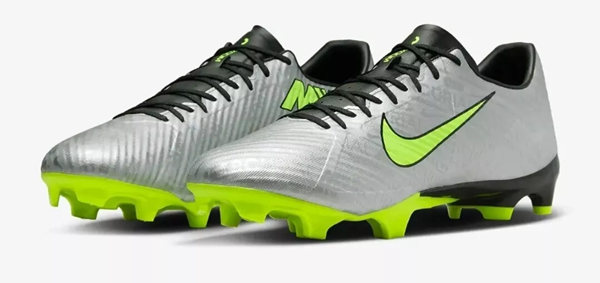

La Nike Mercurial (1998) es una de las botas de fútbol más icónicas y revolucionarias en la historia del deporte, marcando el inicio de la línea Mercurial. Estas botas fueron diseñadas específicamente para jugadores veloces y ágiles, y su lanzamiento coincidió con la Copa del Mundo de Francia 1998, con Ronaldo Nazário como el principal embajador.
Las Nike Mercurial Vapor (2002) representaron una evolución significativa en la línea Mercurial, diseñadas para ser aún más ligeras, rápidas y aerodinámicas. Estas botas debutaron en la Copa del Mundo de Corea-Japón 2002, y se asociaron principalmente con Ronaldo Nazário, quien las utilizó para ganar el torneo y la Bota de Oro.

Las Nike Mercurial Vapor II (2004) fueron la segunda generación de la línea Vapor, lanzadas con el objetivo de perfeccionar las innovaciones introducidas en las Vapor originales. Diseñadas para jugadores veloces y ágiles, estas botas destacaron por su ligereza, ajuste y tracción optimizada.

Las Nike Mercurial Vapor III (2006) fueron un modelo revolucionario dentro de la línea Mercurial, lanzadas en un momento clave para el fútbol: la Copa Mundial de Alemania 2006. Estas botas marcaron un salto importante en diseño y tecnología, convirtiéndose en un referente para jugadores veloces y técnicos.

Las Vapor IV marcaron una evolución significativa en diseño y funcionalidad, siendo utilizadas por estrellas como Cristiano Ronaldo y Zlatan Ibrahimović. Su estética audaz y rendimiento las convirtieron en un modelo emblemático dentro de la historia de las Mercurial.

Las Nike Mercurial Vapor V (2009) fueron una evolución notable en la línea Mercurial, diseñadas para ofrecer mayor ligereza, velocidad y un ajuste mejorado. Lanzadas en conjunto con las Superfly I, estas botas consolidaron la reputación de las Mercurial como un estándar para jugadores rápidos y técnicos.